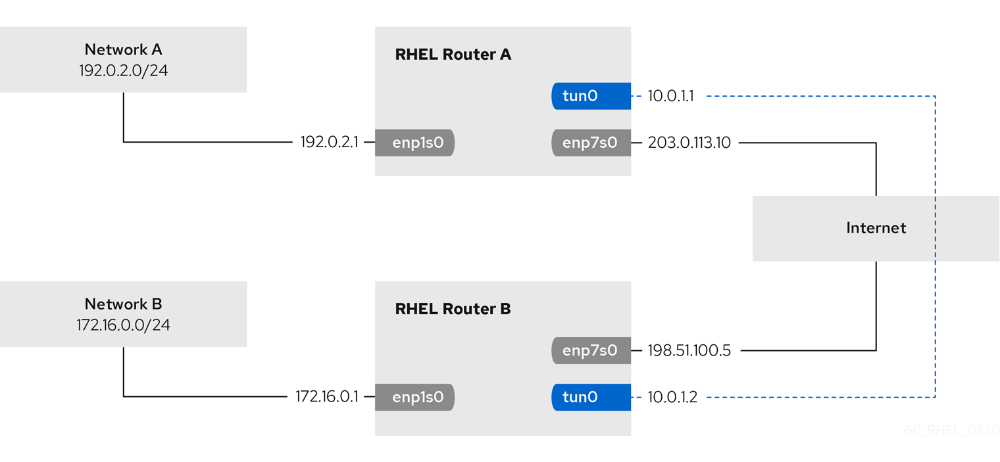

Configuring an IPIP tunnel to encapsulate IPv4 traffic in IPv4 packets
-
Each RHEL router has a network interface that is connected to its local subnet.
-
Each RHEL router has a network interface that is connected to the internet.
-
The traffic you want to send through the tunnel is IPv4 unicast.
An IP over IP (IPIP) tunnel operates on OSI layer 3 and encapsulates IPv4 traffic in IPv4 packets as described in RFC 2003.
Data sent through an IPIP tunnel is not encrypted. For security reasons, use the tunnel only for data that is already encrypted, for example, by other protocols, such as HTTPS.
Note that IPIP tunnels support only unicast packets. If you require an IPv4 tunnel that supports multicast, see Configuring a GRE tunnel to encapsulate layer-3 traffic in IPv4 packets.
For example, you can create an IPIP tunnel between two RHEL routers to connect two internal subnets over the internet as shown in the following diagram:

-
From each RHEL router, ping the IP address of the internal interface of the other router:
-
On Router A, ping
172.16.0.1:# ping 172.16.0.1 -
On Router B, ping
192.0.2.1:# ping 192.0.2.1
-